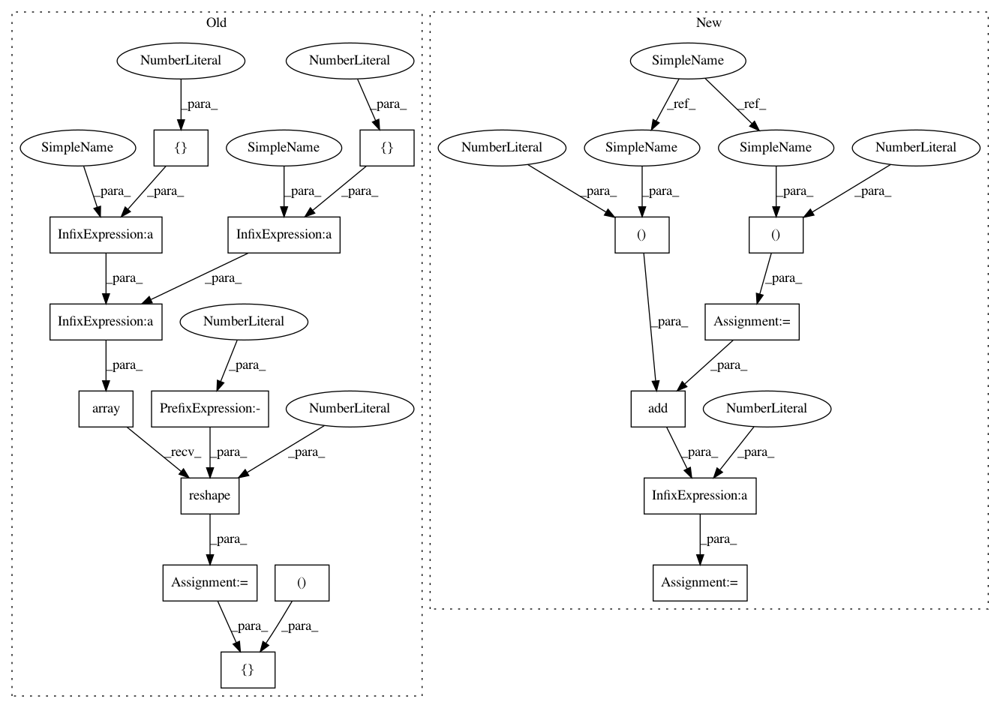

3cba7783cb805459d26918be7a56b0e8b8fd3bc9,context_encoder.py,ContextEncoder,train,#ContextEncoder#Any#Any#Any#,140
Before Change
generated_missing_parts = self.generator.predict(masked_imgs)
// Concatenate the true and generated samples
imgs_x = np.vstack((missing_parts, generated_missing_parts))
// First half are valid and second are fake
valid_y = np.array([1] * half_batch + [0] * half_batch).reshape(-1, 1)
// Train the discriminator
d_loss = self.discriminator.train_on_batch(imgs_x, [imgs_x, valid_y])
// ---------------------
After Change
X_train = 2 * X_train - 1
y_train = y_train.reshape(-1, 1)
half_batch = int(batch_size / 2)
for epoch in range(epochs):
// ---------------------
// Train Discriminator
// ---------------------
// Select a random half batch of images
idx = np.random.randint(0, X_train.shape[0], half_batch)
imgs = X_train[idx]
masked_imgs, missing, _ = self.mask_randomly(imgs)
// Generate a half batch of new images
gen_missing = self.generator.predict(masked_imgs)
valid = np.ones((half_batch, 1))
fake = np.zeros((half_batch, 1))
// Train the discriminator
d_loss_real = self.discriminator.train_on_batch(missing, valid)
d_loss_fake = self.discriminator.train_on_batch(gen_missing, fake)
d_loss = 0.5 * np.add(d_loss_real, d_loss_fake)
// ---------------------
// Train Generator
In pattern: SUPERPATTERN
Frequency: 3
Non-data size: 17
Instances
Project Name: eriklindernoren/Keras-GAN
Commit Name: 3cba7783cb805459d26918be7a56b0e8b8fd3bc9
Time: 2017-07-17
Author: eriklindernoren@live.se
File Name: context_encoder.py
Class Name: ContextEncoder
Method Name: train
Project Name: eriklindernoren/Keras-GAN
Commit Name: 3cba7783cb805459d26918be7a56b0e8b8fd3bc9
Time: 2017-07-17
Author: eriklindernoren@live.se
File Name: context_encoder.py
Class Name: ContextEncoder
Method Name: train
Project Name: eriklindernoren/Keras-GAN
Commit Name: 744353138995f1b15933be6ee2d39f7b83ee1b1f
Time: 2017-07-16
Author: eriklindernoren@live.se
File Name: sgan.py
Class Name: SGAN
Method Name: train
Project Name: eriklindernoren/Keras-GAN
Commit Name: 744353138995f1b15933be6ee2d39f7b83ee1b1f
Time: 2017-07-16
Author: eriklindernoren@live.se
File Name: adversarial_autoencoder.py
Class Name: AdversarialAutoencoder
Method Name: train